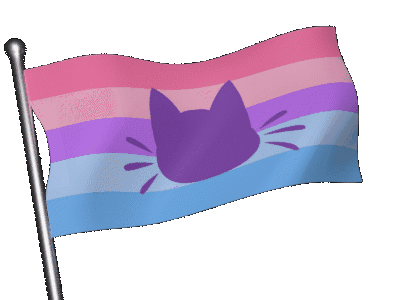
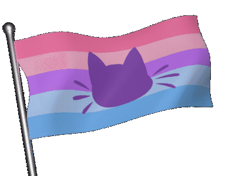

Blog
Main Blog
I'm the webmaster Baisylia (or Bailey), and this is my blog.
I've divided the blog into sections, with this being the main one where I blog about any random
thoughts I may have.


 



YouTube Inspirations
In the last couple of years I've been exploring the person that I am and who want to be, how I feel
and I'm percieved. Creativity strikes from the influences around you, an as someone who is often online
I am often inspired by online creators. The following is a list of YouTube channels that I especially
enjoy, inspire me, and have shaped my personality in some way.
Hopefully none of them turn out to be terrible awful people but it's likely some will. :p
(Please note that I have not included many channels that I like, as they haven't inspired me as much
as I just like them.)
Xploshi
Astrid Ztar
Zack Freedman
TomSka & Friends
Slimecicle
Emma Thorne
owiebrainhurts
FilmCow
jacknjellify
Kane Pixels
carykh
mysticat
Ted Nivison
YukkoEX
PixelzwithaZ
TodePond
binguschondo
Tom Cardy
Noodle
exurb1a
FairyPrincessLucy
Tech Thoughts
I spend a lot of my time on my computer and as such I have many technology related preferences.
I also think that wars between mainstream options such as Apple vs Android are stupid.
Any option can be the best option in certain scenarios, and I have no loyalty to any brand.
The following are my current tech preferences, based on many factors and variables that I don't care to get into.
iPhone > Samsung
Windows > Mac
Linux > Windows
Xbox > PlayStation
PC > Console
Files on my Server > Spotify
Files on my Server > Cloud Services
Godot > Unity
Unreal Engine > Godot
Blender > Maya
Steam > Epic Games
Ecosia > Google
Brave > Chrome
Minecraft Java > Minecraft Bedrock
Forge / NeoForge > Fabric
AT Launcher > Prism Launcher
GitHub > GitLab
Thunderbird > Outlook
Matrix > Discord
Cinny > Element
FluffyChat > Element
Oracle Cloud > Server Hosting
Kinetic Hosting > Other Server Hosting
Notepad++ > Notepad
Paint 3D > Paint
IntelliJ > Eclipse
Adobe Animate > Toon Boom
Hostinger > GoDaddy
Minecraft Lore
According to Jeb's Minecraft design book, Minecraft is a multiverse. Every world has its own lore that
is decided by the player. This is great, Minecraft is a game driven by the player's imagination after
all, but it is clear that Mojang has its own lore in mind as well, that's how the creative process works.
I like to think of their intended lore as the prime timeline, the true Minecraft world in the Minecraft
multiverse. This prime world consists of all the lore set in the base game, as well as Minecraft Dungeons
(MCD), and even Minecraft Legends (MCL).
There is a case to be made that MCL is just a story told by villagers, but just like how MCD was the reason
illagers were added to the base game, Mojang had MCL in mind when adding piglins to the base game. Whether
or not all of MCL is completely factual, it is clear that it is at least based on their intentions for the
prime timeline.
The lore of the prime timeline is actually more set in stone than you may think at first, as the spinoff
games are full of confirmed pieces of lore information, and Minecraft itself is full of small lore details.
The following is lore that is inarguably confirmed, strongly assumed, and educatedly theorised.
Confirmed by Media:
- MCL takes place before the base game
- Desert temples were made by necromancers
- Piglins mined out all of the pure netherite
- There are 3 deities that live in their own plane of existence
- Prismarine is from the deity plane
- The deities converted some of the villagers into the first illagers
- The ender is a physical being and their life force resides within the heart of ender
- The heart of ender has been used by both piglins and illagers
- Villagers are peaceful beings and never fight
- Endermen have a form of sentience
- Ghasts are living creatures
- Sculk consumes and is powered by souls
- Soul sand contains souls
- Sniffers are extinct dinosaurs
- Being killed by the undead can convert you to being undead
- Zombification can be cured in some cases
- Piglins are scared of zombification and soul light
- Hoglins are scared of warped fungi and nether portals
- Piglins require a spore-filled atmosphere to avoid becoming zombified
- End portals are made out of endstone
- Fire frees souls from soul sand but not sculk
Assumptions of Media:
- MCD takes place after the base game
- Vexes are corrupted allays
- Illagers visited ancient cities
- Ocean monuments were built by the deities
- Guardians, elder guardians, blazes, wildfires, and breeze are all golems
- The centre monuments in ancient cities are portals
- Players can respawn in-canon because of the deities
- Slimes can be adapted to other environments by combining their slimy essence with other materials such as blaze powder
- Ghast tears have regenerative properties
- Gold has enhancement properties
- Some of the fossil structures are relatives of sniffers
- Withering is stronger than regular zombification
- Yellow allays are no longer present in the overworld
Theories of Media:
- The ender is a fallen deity
- Players are isekai-ed into the game
- End cities act as shulker farms
- Trail ruins are from the MCL time period
- Experience is literal knowledge essence
- Ravagers were once villagers
- Slimes were made by witches
- Elytras come from a bug of some sort
- Witches are former clerics and created igloos
Pet Peeves
I have many pet peeves, things that really grind my gears for both petty and moral reasons.
The following is an unorganised list of things that aggravate me.
- When people act as though I should share my meal because it is a food that is usually shared, even though I'm eating it as my main meal
- When people then say we can get another meal if I'm not full after sharing my meal
- 'Culinary vegetables', tomatoes are fruits not vegetables, I don't care how they are used in cooking
- The opinion of quantity over quality being better
- Streaming services being the main way to access any media
- People sucking crumbs off their fingers
- When people ask when a mod will be updated to [x version]
- People being early when I was prepared to be ready on time
- People being late and I got ready for nothing
- Asking if something extremely specific is planned for a project instead of just suggesting a feature
- Tone indicators, especially /hj which is the stupidest thing to ever be invented
- 'Straight invalidation'
- Some specific words and phrases such as 'apple pie' evoke great discomfort
- Christmas celebration in November
- Subtle forshadowing memes
- When my hands are slightly sticky or grimy from using a keyboard or mouse
- When the only existing figurine of a character is a funko pop, so then I have to get a funko pop if I want a figure of that character
- The frequency of the
Dunning-Sanches
effect within every environment and community
- Discord, Unity, Spotify, Twitter, IOS, Android, and Google being the way they are
- People disliking they/them for themselves or others
- The worst game, Mario Party
- People being anti-self diagnosis as if they know someone better than they know themselves
- Every third influencer turning out to be a peice of shit
- AI being incorporated into everything, not everything needs ChatGPT integration
MC Update Blog
I'm the webmaster Baisylia (or Bailey), and this is my blog.
I've divided the blog into sections, with this one being about my thoughts on each Minecraft
update. I am yet to discuss every update, but more will come in the future.
Minecraft updates can be quite the divisive topic, as everyone has their own thoughts on what
the game should be and what should be changed to make it the best game it can be. Through my
development of my modpack
Minecraft 2: The Alternate Timeline
I have looked at each individual update with great scrutiny, and as such I have many thoughts
about them all. The following is a list of major Minecraft updates and game drops and what I
think about each one. (More will be added here over time!)
1.20.3
1.20.3, or 'Bats and Pots', is the first of many 'game drops', a trend started after 1.20. I think that
game drops are stupid, the whole point of version numbers is that they show which versions are major
updates and which are minor changes. And now there are just a bunch of updates with minor change version
numbers that are actually major-ish updates? Are all of the game drops released post 1.21 just part of
Tricky Trials? They are all extensions of 1.21 so that's how it looks. Despite my problems with game drops,
that doesn't mean the changes in these smaller updates are necessarily bad. A lot of them are quite good,
and while this one in particular is fairly small, it made a couple of changes that I love.
- Bats have always looked weird with their pixel inconsistent designs. I never thought I would see them
get updated, yet here we are. I adore their new design and I wish my existing merchandise involving bats
could update with them.
- Decorated pots being made to be able to store items felt like a no brainer to me. It's both fun and useful,
adding utility to an otherwise decoration-only block. I think that more blocks deserve updates like this.
I'm not huge on the animations for inserting items though, to me it feels somewhat strange for the block to
move in such a smooth way.
1.20.5
1.20.5, or 'Armored Paws', is another game drop, implementing the mob from Minecraft's final mob vote, which
I voted for. Because of this, it should be obvious that I am quite happy with this update, though it certainly
has its issues.
- Armadillos are the mob I voted to join the game, as I have wanted wolf armour for a very, very long time. I
think that the mob is quite fun, if not a bit of a strange addition to the game when compared to the existing
animals. Them crawling up into a ball is quite cute, and being able to brush off their scutes is a cool addition
that I would love to see added to turtles as well. I'm not huge on how scute brushing works though, rather than
there being a cooldown on each armadillo, you can just spam click them until your brush breaks. That combined
with armadillos randomly dropping scutes on ocassion makes me not very fond of their scute mechanics overall.
- Wolf armour, as I previously mentioned, is something I have always wanted to be in the game, and so I love
this addition. Having it tied to armadillos is not exactly the way I would implement it myself, as it could have
just worked the same way as horse armour. Mob uses like this are very strange and I feel as though there are
better ways to make mobs useful than tying them arbitrarily to items such as this. I still enjoy having wolf
armour though, and I can see myself actually taking wolves out into the world with me thanks to their addition.
- Wolf variants are really cool, and are an example of an unexpected feature stemming from a vote. Some other
examples of this phenomenon include glow berries, fireflies, and practically all of 1.18. Dog types had been a
long requested feature, so to see them finally come to the game while also making wolves spawn in more locations
was really cool.
1.21
1.21, or 'Tricky Trials', is the first (and last) major update since game drops were introduced, adding a
variety of features mostly relating to the new trial chambers. A lot of people seem to not care about this
update that much, but I think it was actually quite a decent update, adding some really cool features that
I wouldn't want to live without now.
- Trial chambers are really cool structures that I have had a lot of fun with. They can be quite difficult
to fight through, but also feel worth the effort unlike a lot of the structures in the game. My main problems
are that it can be difficult to find these structures at times, making this update feel very self contained,
and that the chambers are full of copper blocks. Copper is not a useful resource, but now that you can get
stacks upon stacks of the stuff from a single structure there is no hope of it ever becoming a useful resource.
- Trial vaults and spawners replace regular chests and spawners in trial chambers, and they function in a very
cool way. Allowing multiple players to fight through the chambers by limiting rewards to keys and vaults is a
good way of keeping chambers replayable, and I hope to see these blocks used in more structures in the future.
I also appreciate that the spawners create more difficult waves when there are more players around, the blocks
work together really well to make the chambers function to their fullest in both singleplayer and multiplayer.
- Breezes are an awesome mob, I love the idea of element type blaze alternatives so much. I hope that we see
more mobs of this nature in the future. For a blaze alternative the breeze is also very unique, it almost acts
more like a boss mob than the blaze does with its wind attacks and evading strategies. Wind charges are a very
cool alternative to fire charges, and make me wish that fire charges could be thrown like fireballs in a similar
way to the wind charges. It's a bit weird that wind charges come directly from breeze rods, when fire charges
come from blaze powder not blaze rods, but if they had no other ideas for breeze powder uses then I suppose
it's better to have less item bloat.
- The mace is a pretty fun weapon, that I've enjoyed messing around with in my testing. Unfortunately it feels
way to rare to me to actually be worth anything. It's a similar case to the trident, but turned up to 11, and I
can't justify their cost for their gimmick. I also think that adding the heavy core just as an ingredient to craft
the mace is stupid. You could just have maces come from vaults like tridents do.
- Ominous bottles solve a problem I've had with illager raids, that being the instant bad omen you get from
eliminating a patrol. The choice to activate bad omen yourself is quite the welcome one, though I don't know if
I would have chosen a consumable liquid myself. Tying bad omen in with trial chambers is a pretty fun idea, I
always prefer adding new uses to existing mechanics rather than making new mechanics that feel very similar.
- Crafters are something I never thought we would see in the game, and are also something I've always modded
into it myself. While the mechanics of the block seem a little bit janky to me, I think this is a great addition
that opens up a world of possibilities in automation. This one of the best features of this update.
- Bogged are a swampy skeleton variant, which has been explored before in other forms through things like
Minecraft Dungeons. I think the bogged is the best version of this idea, and has much more of a personality than
strays. I appreciate that they were even added at all, since originally they were just regular skeletons with
poison arrows in chambers. They went above and beyond to make this version of the mob interesting, even making
them shearable. Of all the undead variants this is one of my favourites.
- The new copper block types are great, and honestly they should have just been added along with copper originally.
As I previously mentioned I do not like them generating in such a large quantity in chambers, but that's more of
a structure issue than a problem with these blocks. They look nice and I enjoy using them, and I am so happy that
they changed the terrible trapdoor and door recipes that they came with originally. A lot of people were
dissapointed by the changes to the copper bulb, but I don't really care personally.
- I find the new potions to be kind of strange. Not bad necessarily, but just a bit weird in comparison to the
existing potions. The infestation potion is the least strange to me, and I think it's pretty cool despite the recipe
just requiring stone. The other three potions causing something to happen when you die is what I find the most
strange, and while I understand their purpose in context of trial chambers, they feel a bit odd to exist as
potions outside of that. I prefer oozing to weaving and wind charging for similar reasons to infestation, weaving
is fine, and wind charging is definitely my least favourite.
- The new discs in this update are pretty great for the most part, I quite like a lot of the new music in this
update in general. I can't decide if I like Precipice of Creator more, but I do know that Creator (Music Box) is
one of the worst discs in the game. I can appreciate it as a version of Creator that just sticks to the music box
aesthetic, but I wish it had just stayed a remix online or something. It's just dissapointing to get the music
box version, and for some reason that's usually the one I get.
1.21.2
1.21.2, or 'Bundles of Bravery', is another game drop, adding just one feature if you don't count bedrock
edition finally getting hardcore mode. (Which I don't.)
- Bundles should have been added to the game a long time ago. Being a relic of 1.17, they had a long time to
cook, and it is baffling to me that it took so long to add them. The reason I believe it took so long for bundles
to be properly added, is the problem Minecraft faces due to its many platform versions. While the bundles worked
perfectly well on java edition in snapshots from back when they were originally created, they had to figure out
how to get them to work on consoles and mobile devices. This is also why I believe bundles changed so much when
they were finally implemented. And these changes are just really not great. The way they worked before was simple
and easy, allowing you to see all the items inside and insert / deposit items into it simply. All they had to do
was add an option to scroll through which item you are currently selecting in the bundle to drop, and it would
have been perfect. But alas, they changed it to a new system that works better on mobile phones because that is
their priority. It's a real shame, but at least we have bundles now.
Ignoring their history, the addition of bundles is really good. A lot of people dismiss them as though them only
having one slot doesn't 'solve' the inventory issue. But this one slot is so very useful! It is so easy to make
space in your inventory when you can combine items of different types into one slot. Bundles are a must have for
me in any playthrough.
1.21.4
1.21.4, or 'The Garden Awakens', is another game drop, and it is a fairly underrated one in my opinion. There
isn't much in this update that I actively dislike, it is all fairly decent stuff.
- Creaking hearts are the sculk shriekers of pale gardens, spawning the creaking based on certain factors. I enjoy
that while there are many similarities between these blocks, they do have fairly different mechanics. Whereas
sculk shriekers spawn wardens to protect the deep dark, the creaking heart acts more like the true body of the
creaking, using the mob creaking as a vessel to attack the player at night. I also appreciate that it allows resin
to be a renewable resource.
- Eyeblossoms are a very cool looking flower, and I appreciate their mechanic of opening and closing depending on
the day, it is a mechanic that ties in well with the creaking heart. I do not however like that there are two items
for the flower depending on its state, this could have very well just been a blockstate and I don't understand why
open eyeblossoms make a different dye to closed eyeblossoms.
- I love moss, so pale moss is a very welcomed addition for me. Pale moss carpets are also nice, and I like that it
grows up walls, it would be cool to see regular moss carpets do this too. I find it weird that certain blocks have
mossy variants when it could just be an overlay block or a system similar to waterlogging. Pale hanging moss is the
star of the show when it comes to pale moss, and I really like how it blends the ground and the treetops together in
the pale gardens.
- Pale gardens are a pretty cool concept, a cool antithesis to the dark oak forests. I think that the biome is quite
good, though due to it being based on the dark oak forest it suffers its same issues, notably that the tree shapes
suck. The pale garden would be much better if the tree shapes were taller and less flat in the foliage region. Like
many others, I think that the biome could use a dense fog to make it feel creepier.
- Pale oak is a really good wood type, it's kind of wild that the game went so long without a white wood. It's very
verstaile for building, the log looks nice, and the doors/trapdoors have a cool texture. The stripped log texture
is very smooth and looks very nice in a wall. The sapling is also quite nice, especailly in comparison to the dark
oak sapling.
- Resin is a material I've wanted in the game for quite a while, and are a feature that many mods have attempted to
make. Tying it to the creaking heart is very different to the sap-collecting of mods, and isn't something I would
have expected from vanilla. The resin brick item feels somewhat unnecessary when there is already a resin clump item,
but it is cool that it can be used as an armour trim colour. The blockset is quite nice, although I personally don't
build with orange very often.
- I quite like the creaking, Mojang have wanted to create an asymmetrical mob for quite some time so I'm happy for
them that they finally have. I've wanted a weeping angel-type mob in the game for a long time, so I really enjoy the
creaking's mechanics. I like that it is tied to the creaking heart, and the particles leading you to the heart is
a cool way to balance out you being unable to attack the creaking itself. It's interesting how multiple of the recent
hostile mobs now are not meant to be killed.
1.21.5
1.21.5, or 'Spring to Life', is another game drop, and for the most part this one is really good, adding a lot
of small features that the community has wanted for a long time. Despite this I think that there are also some
parts to this game drop that aren't all that great.
- Bushes are a fun addition that add some foliage variation to several biomes. I think the texture leaves a
little to be desired, but I'm glad they were added overall.
- Cactus flowers are something I added to MC AT near the beginning of development, so it was cool to see them
added to the game officially. I think there's a missed potential with cactus fruit, especially with the concept
from the proposed badlands update. Besides that, it is a fun addition that I enjoy.
- Fireflies were finally added to the game after people screaming about them for years. And yet I haven't seen
all that much about people using them... it's almost like people only wanted them because they couldn't have them.
Strange. I am a firm believer that all Minecraft bugs should be large, like spiders, bees, and silverfish, so I
despise fireflies being particle sized. But if you renamed them to glowing spore bush or something with a resource
pack, the firefly bush is a fairly cool block and I enjoy its mechanics. It just would have been nice to have full
sized fireflies like in the mod Naturalist, which I have used in MC AT.
- Leaf litter is a really cool decoration block that both adds a new use to leaves and covers the realm of 'leaf
carpets' often add by mods. Leaf litter being brown is a great thing and anyone who thinks they should be green
needs to go outside and see what fallen leaves actually look like.
- Short and tall dry grass are also great decoration blocks that add some life to the mostly boring desert. Unlike
the bush I think their textures are pretty solid.
- Wildflowers are the pink petals of birch forests, and I appreciate more biomes having ground covering flowers.
- Test and test instance blocks seem pretty useful for development, which is greatly appreciated as a mod developer.
I'm not sure how often I'll get to use them, since I mostly focus on MC AT which is on 1.19.2, but I'm sure they will
be great for other developers.
- Blue and brown eggs feel somewhat redundant to me, as you could just have eggs spawn the chicken assoicated with
the biome they are thrown in so it feels like item bloat. I also don't like that they aren't data driven, so if you
want to make a custom chicken type you can't make a custom egg type to go with it. That's pretty lame.
- I really like the new animal variants for pigs, cows, and chickens, I never thought I would see the day where they
got added. I've wanted animal variants since Minecraft Earth was released, and while it's strange they didn't bring
back any of those designs, I am pleased with the ones that we got. It would have been nice if sheep got variants too,
but at least the change of having blue and yellow sheep spawning naturally was reverted.
- Wolf personalities are a random but fun addition that I was surprised to see, I would love other mobs to recieve
this same treatment so that there are more small differences between different animals. It would be interesting
to see the personalities affect other factors about mobs than just sounds, perhaps that will happen in the future.
- I do not like the new spawn eggs. I think it's great to remove the speckled designs as there is quite a steep
learning curve for knowing which one is which, and they aren't very colourblind-friendly, but i just do not like
the way they went about the new designs. Each egg being a different size upsets me on a primal level, and I do not
understand why mobs that are affected by impaling have a ring of water around them. That is a very strange factor
to point out in spawn eggs and I don't like how they look. I also don't like how the eggs don't have eyes, but do
have other facial features (except for creepers and creepers only???). These new eggs are basically round funko
pops and I'm not a fan. I much prefer the resource pack
Mob Crates
, it is far more creative and actually looks good. I will be using this in all of my instances, but I will be forced
to use the egg versions when I'm using mods for 1.21.5+ because their mobs will not magically adhere to this resource
pack.
- The lodestone being crafted with iron instead of netherite is a great change, as tying lodestones to late game
never made too much sense in the progression. It's a shame that it's yet another use for iron when copper is so
limited, but copper's balancing is too all over the place for it to be used in any recipes with the trial chambers
being full of it.
- Camels spawning in deserts should have been the way they spawned from the start. Camels are not just tamed animals,
they are also found in the wild. I'm glad that has changed.
1.21.6
1.21.6, or 'Chase the Skies', is another game drop, adding a few cool ghast related features. It's a bit smaller
than the previous game drop, but they have all been fairly inconsistent in scale.
- Happy ghasts are really cool mobs that I never expected to be added to the game. I've wanted baby ghasts to be
in the game since they were added to Minecraft Dungeons, and making them grow up to be happy by letting them live
in the overworld is some really cool lore that ties into that one advancement about freeing a ghast from the nether.
Being able to ride happy ghasts is extremely cool, and being able to take others with you on them is really fun.
Their harnesses look a little goofy, but in a way that I appreciate. I also love that their addition came with a
ghast retexture, finally making them more pixel consistent.
- The new lead mechanics are really cool, and I enjoy how they interact with happy ghasts especially. It seems to
have been inspired by the Minecraft Movie, and that is something I'm all here for. Chaining mobs together allows
for many different use cases, even if it invalidates llama caravans somewhat (but that mechanic has always sucked
anyway).
- Saddles being craftable is something I thought would just never happen, saddles being such an old feature that
have remained as dungeon loot for so long. Them becoming craftable is great, and gives me hope that some day
horse armour and name tags will get this same treatment.
- The player locator bar seems kind of cool, though I can't imagine using it myself very often. I don't have too
many thoughts on it other than it's weird to outright replace the experience bar while using it.
- I'm personally not huge on the Tears music disc. It isn't awful, but it isn't amazing either. It may grow on me
over time but for now it isn't something I'd go out of my way to listen to. I do find it strange however that you
get the disc from killing a ghast with its own fireball, one of the most common ways to kill a ghast.
- 1.21.7 being a patch for 1.21.6 really shows how stupid game drops are. From seeing the version numbers alone,
you would have no idea that one of them is a game drop and the other is a patch. It's completely ridiculous and
stupid. The painting and disc that this patch adds are also ridiculous and stupid. I personally do not like paintings
that aren't made by Kristoffer Zetterstrand, I think that the shrunk images of his works feel far more Minecrafty
than normal pixel art paintings. I share a similar sentiment for Minecraft's music. Minecraft songs should not ever
be chiptune, or use noteblocks, mob sounds, or other game sounds (besides the creepy lore discs like 11). The lava
chicken disc defies these rules, being a song that does not fit in the game at all. It's like they took a random
remix off of YouTube and put it into the game. I do not like the precedent that this disc sets. I don't even mind
a Minecraft Movie reference being added to the game, but like this?? Really?? The villager sounds sound like AI.
1.21.7 may be my least favourite update ever, and so with how game drops work, 1.21.6 is very negatively affected
in my eyes thanks to it.